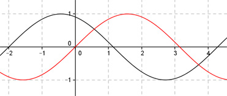

Aufgabe 233 Bestimmen Sie c für den dargestellten Graphen der Form y = a * sin (b * (x + c)) + d.  Abgelesen: Periode p = 2п, (von -2 bis 4,28) --> 2п 2п |b| = ---- = ---- = 1 und p 2п Keine Spiegelung an der y-Achse --> b = 1 asin(x + c) + d Verschiebung von Punkt (0|0) in (-2|0) --> Abgelesen: |a| = 1 Keine Spiegelung an der x-Achse --> a = 1 --> sin(x + c) + d Abgelesen: Keine Verschiebung entlang der y-Achse --> d = 0 sin(x + c) Abgelesen: Verschiebung entlang der x-Achse um 2 nach links --> c = 2 --> y = sin (x + 2) Zum Vergleich: sin x